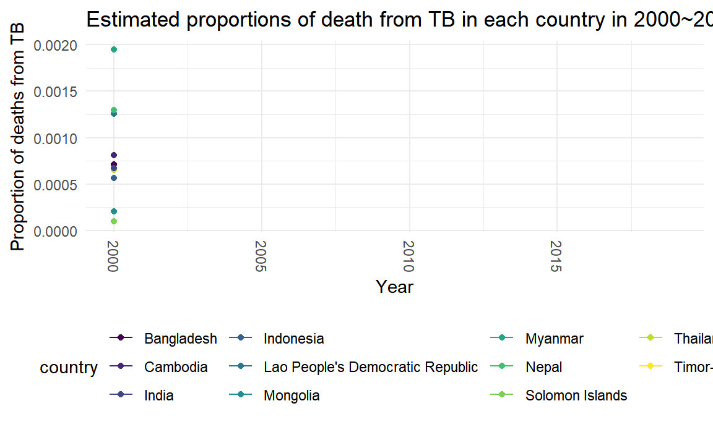
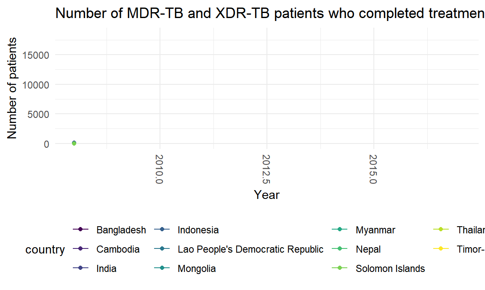

TB_burden = read.csv("./data/TB_burden_countries.csv")
TB_mort =
TB_burden %>%
filter(country %in% c("Bangladesh", "Cambodia", "India", "Indonesia", "Lao People's Democratic Republic",
"Mongolia", "Myanmar", "Nepal", "Solomon Islands", "Thailand", "Timor-Leste")) %>%
select(country, year, e_pop_num, e_mort_num) %>%
mutate(e_mort_pro = as.numeric(e_mort_num)/as.numeric(e_pop_num)) %>%
select(-e_pop_num, -e_mort_num) %>%
mutate(
year = as.numeric(year),
e_mort_pro = as.numeric(e_mort_pro))
p <- ggplot(data = TB_mort, aes(x = year, y = e_mort_pro, group = country)) +
geom_line(aes(color = country)) +
geom_point(aes(color = country)) +
labs(x = "Year", title = "Estimated proportions of death from TB in each country in 2000~2019") +
scale_y_continuous(name = "Proportion of deaths from TB") +
theme(axis.text.x = element_text(angle = 270, vjust = 0.5, hjust = 1))
p + transition_reveal(year)
TB_outcomes = read.csv("./data/TB_outcomes.csv")
TB_success =
TB_outcomes %>%
filter(country %in% c("Bangladesh", "Cambodia", "India", "Indonesia", "Lao People's Democratic Republic",
"Mongolia", "Myanmar", "Nepal", "Solomon Islands", "Thailand", "Timor-Leste")) %>%
select(country, year, mdr_succ, xdr_succ) %>%
na.omit(mdr_success) %>%
na.omit(xdr_success) %>%
mutate(mdr_xdr_success = as.numeric(mdr_succ) + as.numeric(xdr_succ)) %>%
select(-mdr_succ, -xdr_succ) %>%
mutate(
year = as.integer(year),
mdr_xdr_success = as.integer(mdr_xdr_success))
p <- ggplot(data = TB_success, aes(x = year, y = mdr_xdr_success, group = country)) +
geom_line(aes(color = country)) +
geom_point(aes(color = country)) +
labs(x = "Year", title = "Number of MDR-TB and XDR-TB patients who completed treatments or were cured") +
scale_y_continuous(name = "Number of patients") +
theme(axis.text.x = element_text(angle = 270, vjust = 0.5, hjust = 1))
p + transition_reveal(year)